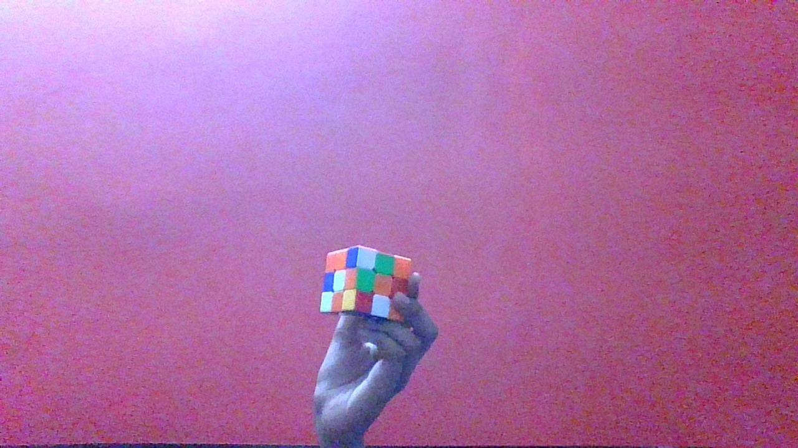

Output on GOOGLE LENS -
DOMS NEON RUBBER TIPPED PENCILS
Output on Mobilenet Model -
lighter,light,ingnitor,ingnitor
Result -
GOOGLE LENS is more accurate
Test Image -

Output on GOOGLE LENS -
speed cube
Output on Mobilenet Model -
pill bottle
Result -
GOOGLE LENS is more accurate
Test Image -
Output on GOOGLE LENS -
magnifying glass
Output on Mobilenet Model -
bubble
Result -
GOOGLE LENS is more accurate
I Have Tested 3 Images. GOOGLE LENS Have Predicted 3 Of Them More Accurately than MOBILE NET. So According To My Case Study GOOGLE LENS Is More Accurate.